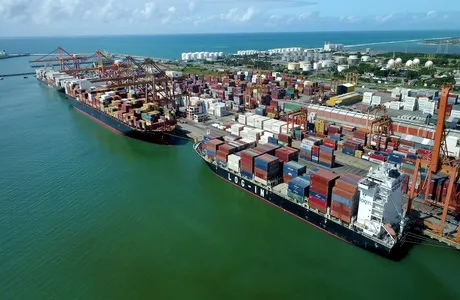
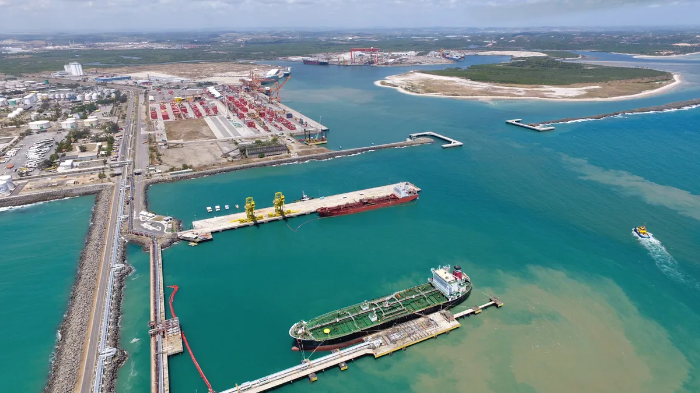

Suape na Palma da Mão
Suape na Palma da Mão
O Porto de Suape apresenta grandes diferenciais em relação aos demais portos públicos do país, que o colocam como posição de destaque nas regiões Norte e Nordeste. É um porto abrigado, com águas calmas e profundidade que varia de 15,5 a 20 metros. Suape opera durante os 365 dias do ano, 24 horas por dia, sem restrições de marés ou condições climáticas.
Está conectado aos principais portos do mundo por rotas marítimas de navegação. Com linhas diretas para os países da Europa, América do Sul e Norte, é responsável pela distribuição de cargas para todos os continentes.
Com localização privilegiada na região Nordeste, está a um raio de 800km de sete entre as nove capitais do Nordeste; de 12 aeroportos, sendo seis internacionais, 12 nacionais e um universo de 46 milhões de habitantes na zona de influência.
Em pleno crescimento e expansão, especialistas avaliam que o Porto de Suape será o grande hub port da América do Sul, sendo um polo de atração de grandes linhas de megacarriers (grande operadores e armadores mundiais de linhas regulares).
Em 2019, o Porto de Suape firmou acordo de cooperação técnica com a Autoridade do Canal do Panamá. O acordo é estratégico para troca de experiências e atração de novas oportunidades para os dois portos.
O Porto de Suape está entre os 10 portos públicos do Brasil com melhores opções de conexão marítima e maior representatividade comercial. É também um dos 12 portos públicos com a maior quantidade de linhas regulares de navios de carga geral, ro-ro e navios de contêineres.
Está entre os seis portos com maior quantidade anual de escalas de navios de contêineres, sendo o porto público do Norte/Nordeste com maior movimentação de contêineres.
Na operação portuária, o Porto de Suape movimenta anualmente mais de 23 milhões de toneladas de cargas. Desde 2015, Suape se tornou líder na movimentação de granéis líquidos e cargas por cabotagem no ranking nacional de portos públicos. É porta de entrada e saída de mercadorias do Brasil, com papel importante na movimentação de cargas dentro do território brasileiro.